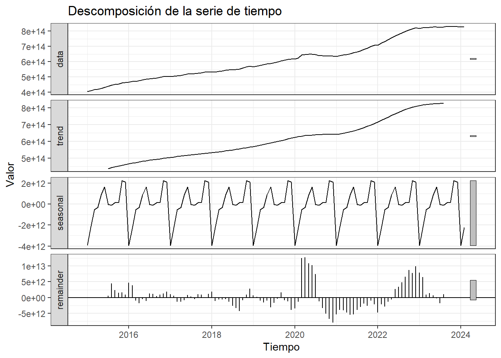

6 Descomposición de la serie de tiempo
Para realizar la descomposición de la serie de tiempo sobre la variable Vigente, la cual representa el Saldo Capital Vigente a cada fecha sobre el que se encuentra activa la cartera, se agrupan los valores por cada entidad para cada periodo, con el fin de hacer un análisis general.
data_agrupada <- aggregate(Vigente ~ FECHA_CORTE, df, sum)
datosVig <- ts(data_agrupada$Vigente, frequency = 12, start = c(2015,1))fit <- decompose(datosVig, type='additive')
autoplot(fit)+
labs(title = "Descomposición de la serie de tiempo",
x = "Tiempo",
y = "Valor",
colour = "Gears")+
theme_bw()
6.1 Tendencia
La tendencia general del capital vigente es ascendente, lo que indica que la cantidad de capital en mora ha aumentado con el tiempo. La tendencia no parece ser lineal, sino que presenta un crecimiento más rápido en los últimos años.
6.2 Estacionalidad
Se observa una clara estacionalidad con un pico en el segundo semestre de cada año.Es importante considerar esta estacionalidad al realizar pronósticos o tomar decisiones relacionadas con la gestión de la morosidad.
6.3 Residuos
El residuo representa la variabilidad aleatoria en la serie de tiempo que no se explica por la tendencia ni la estacionalidad. El residuo no parece tener un patrón definido, es decir es aleatorio, lo que indicaría posibles eventos atípicos o factores externos no considerados en la descomposición.